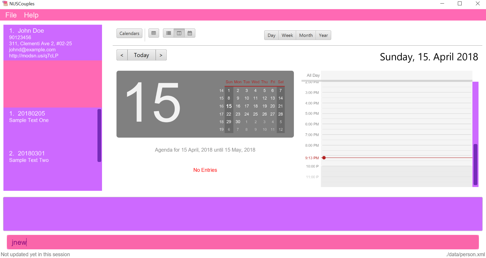
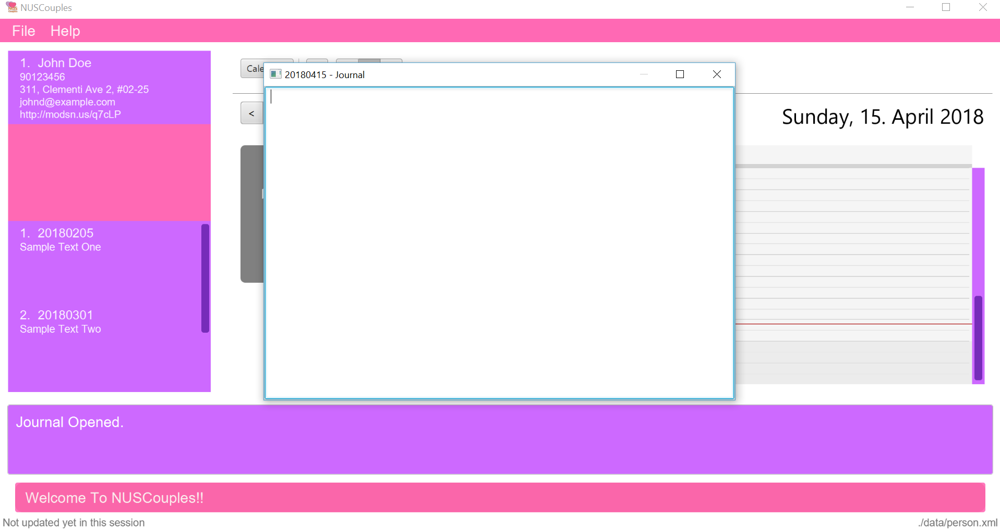

Overview
NUSCouples is a desktop application targeted at couples studying in the National University of Singapore (NUS). The user interacts with it using a CLI, and it has a GUI created with JavaFX. It is written in Java, and has about 10 kLoC.
Summary of contributions
-
Major enhancement: implemented a journal in NUSCouples.
-
What it does: allows the user to write, edit and save journal entries.
-
Justification: this feature allows the user to record their thoughts and feelings as and when they want to. This is especially useful when one is in a relationship.
-
-
Minor enhancement: added a command to compare and display the common breaks in the NUSMods timetable of the person stored in NUSCouples along with one other given timetable. Removed dependency on addressbook as a middle man. Since our project is targeted towards couples, we only need to hold one person. Thus, I reimplemented addressbook methods to apply to only one person.
-
Code contributed: [Functional code] [Test code]
-
Other contributions:
Contributions to the User Guide
Given below are sections I contributed to the User Guide. They showcase my ability to write documentation targeting end-users. |
Journal
NUSCouples provides you with a space to write, save and view journal entries. The list of saved journal entries will be shown in the main window. Read on for more details about how to use this feature.
| Saved journal entries can only be edited on the same day. Once saved, a journal entry cannot be deleted. |
Creating a new journal entry : jnew [Since v1.2]
Creates a new window that allows the user to input text. The window title will reflect the date
it was created on in the format yyyymmdd - journal. For example, a journal window opened on the 5th of March
2018 will have a title of 20180305 - journal. If an entry with that date already exists, it will open
that entry in the window. Saving is not required as the journal entry will be automatically saved when the
journal window is closed.
To protect you from accidentally entering commands while in the journal window, the journal window will always be in front of the main window.
| If saving fails, a new window will appear containing your last session data with a warning above your text. You should copy your text to your computer clipboard using ctr + c so you will not lose your data if you need to restart the app. |
Format: jnew
Alias: jn
Screenshot: Before

Screenshot: After

Viewing journal entries : jview
Selects a journal entry from the list seen in the GUI. The contents of the journal entry will be shown in the main window. Opening a journal window while a journal entry is displayed will display the edited entry once the journal window is closed.+
Format: jview
Alias: jv
Return to Table of Contents |
Motivational Picture
Send motivational picture via app : motivate
Shows the location (by building) of the entered classroom name.
Format: motivate
There is no alias for this feature currently.
Alias: jv
Return to Table of Contents |
=== Future Features
==== Encrypting data files [coming in v2.0]
{explain how the user can enable/disable data encryption}
==== Sync the calendar with Google API [coming in v2.0]
{explain how the user can authentic with google API and view and retrieve events from Google}
==== Archiving journal entries [coming in v2.0]
{explain how the user can export old journal entries to another storage location in their computer}
==== Send Google Maps location to phone [coming in v2.0]
{explain how the user can use their phones to navigate to a location in NUS by sending the location to the user’s phone from the Google Maps API}
==== Filtering journal entries by date [coming in v2.0]
Filters journal entries by the specified interval.
Format: jfilter
Alias: jf
==== Finding building location [coming in v2.0]
Shows the location (by building) of the entered classroom name.
Format: location
Alias: loc
==== Send motivational picture via app [coming in v2.90]
Shows the location (by building) of the entered classroom name.
Format: motivate
There is no alias for this feature currently.
Return to Table of Contents |
== FAQ
=== Data
This section is for questions related to NUSCouples data. For more information, refer to [Saving the data]
Q: How do I transfer my data to another Computer?
A: Install the app in the other computer and overwrite the empty data folder it creates with the folder that contains
the data of your previous NUSCouples folder.
Q: Why is the app not showing my previous session data?
A: Verify that the .jar file was not moved to a new directory recently. If you have done so, ensure that the data
folder in the original directory was moved to the new directory. For example, if you have moved NUSCouples.jar from
C:\Program Files (x86)\NUSCouples to C:\Users\[Username]\Desktop\NUSCouples, you should move the data folder
C:\Program Files (x86)\NUSCouples\data to C:\Users\[Username]\Desktop\NUSCouples\data
Q: Can this app run on mobile devices or tablets?
A: No, this is a desktop app. To be more specific, you are not required to use cursor mouse to handle the App because it is CLI based
If the files in the data folder have been manually edited, NUSCouples may not be able to read the data properly.
NUSCouples takes no responsibility for data loss/ data corruption due to unintended user behavior affecting the data
folder, such as deletion or editing of files manually.
If the solutions above are not related to your issue, it may be due to a bug. Please contact us at //CONTACT US
and attach the log file that should be stored in the same location as the NUSCouples.jar file. The log file is named
NUSCouples.log.0. The number at the end may be different. If there are multiple log files, you should attach the
latest one or attach all of them to be safe.
Return to Table of Contents |
== Command Summary
| Command | Description | Format | Example |
|---|---|---|---|
add, a |
Add your partner |
|
|
edit, ed |
Edit your partner |
|
|
delete, d |
Delete your partner |
|
|
select, s |
View your partner’s timetable |
|
|
history, hist |
View command history |
|
|
undo, u |
Undo the previous undoable command |
|
|
redo, r |
Reverses the most recent undo command |
|
|
jview, jv |
View a journal entry |
|
|
jnew, jn |
Create/edit a journal entry |
|
|
calendar, cal |
Viewing your current calendar |
|
cal w |
appointment, appt |
Adding a new event to your current calendar |
|
appt 1 d/Checkup, tomorrow 10am to 12pm |
cancel |
Deleting an event from your current calendar |
|
|
exit, ex |
Exits NUSCouples |
|
Return to Table of Contents |
== Contributions to the Developer Guide
Given below are sections I contributed to the Developer Guide. They showcase my ability to write technical documentation and the technical depth of my contributions to the project. |
=== Journal feature ==== Current Implementation
A JournalEntry contains only two variables, a String corresponding to the date the entry was created and a
String containing its text contents. It is stored in the Journal, which consists of an ObservableList <JournalEntry>
and a HashMap <Date, JournalEntry>, and resides inside ModelManager. The journal supports adding, editing of
the current journal entry and saving journal entries.
The List data structure makes it easy to show an ordered list of items, and is ideal for adding and displaying my journal
entries. However, searching for a particular entry will be tedious as there is a need to iterate through the entire list.
A HashMap is used alongside the list in order to search and get journal entries easily. All search and get operations
can be done in O(1), which makes it ideal for these specific operations. However, it does not allow for an ordered list
easily. Due to the use of both a List and a HashMap, all operations on the journal must be synchronised
for both data structures.
Suppose that the user has just launched the application for the first time. The Journal hold a list of sample journal
entries. On the jnew command, the app will check if the journal contains a JournalEntry corresponding to the
current local date in the form (yyyymmdd). If it exists, its data (date and text) is read from the JournalEntry and a
copy of it is opened in a new JournalWindow. This is done using a HashMap<Date, JournalEntry>.
If it does not exist, a new JournalWindow is created. When the window
is closed, a handleJournalClose method is called. If the TextArea is not empty, a SaveEntryEvent is raised. This
event will pass the data from the JournalWindow in the form of a JournalEntry to the event handler.
The ModelManager will raise the SaveEntryEvent` by adding the JournalEntry to the Journal. If a
JournalEntry with the same date exits, it will update the previous entry. When the ModelManager makes a change to the
journal, an indicateJournalEvent is raised.
The StorageManager handles the reading and writing of journal entries. This event gets the current Journal and passes
it to the event handler. The StorageManager handles the event by converting the journal into an xml file and saving it
in the root/data folder. If there is no journal.xml file present, it will create a new one.
The user cannot choose to save the JournalEntry under a different date. The user also cannot edit past
journal entries.
|
==== Design Considerations
===== Aspect: Implementation of JournalWindow
-
Alternative 1: Use javafx to directly make a new window.
-
Pros: Easy to implement. Only requires a few lines of code in one or two files.
-
Cons: Not consistent with the rest of the app. Needs more effort to maintain when changes are made.
-
-
Alternative 2: Make use of the UI framework.
-
Pros: Consistent with rest of app.
-
Cons: Harder to implement. Requires understanding of the UI component. Required minor edits in many files.
-
===== Aspect: Data Structure of Journal
-
Alternative 1: Use HashMap to store journal entries.
-
Pros: Easy to search and get.
-
Cons: Difficult to show ordered list.
-
-
Alternative 2: Use List to store journal entries.
-
Pros: Can show ordered list easily.
-
Cons: When there are many items in the list, searching may take very long as it has to iterate through the entire list.
-
-
Alternative 3 (current choice): Use both.
-
Pros: All operations can be done easily.
-
Cons: Need to set data structures on initialisation and sync all operations between the two data structures.
-
===== Aspect: Naming of journal entries
-
Alternative 1 (current choice): Automatically uses current date "YYYYMMDD" as file name.
-
Pros: No need to worry about duplicate names. Easy to implement filtering (can filter by value easily).
-
Cons: Lack of personalisation. Hard to distinguish between files.
-
-
Alternative 2: Allow user to name journal entries.
-
Pros: User can distinguish between files easily.
-
Cons: If duplicate names are allowed, we need to distinguish them with another method. If duplicate names are not allowed, user may struggle to find unique names for every entry.
-